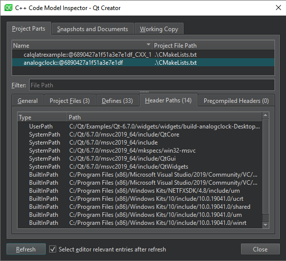

Inspect the code model
When you report a bug that is related to the C++ code model, the Qt Creator developers might ask you to write information about the internal state of the code model into a log file and to deliver the file to them for inspection.
To view information about the C++ code model in the C++ Code Model Inspector dialog and write it to a log file, select Tools > Debug Qt Creator > Inspect C++ Code Model or press Ctrl+Shift+F12.

Qt Creator generates the code model inspection log file in a temporary folder.
Qt Creator underlines semantic errors in olive in the C++ code editor in the Edit mode. To check the correct paths for includes that are not resolved or that are resolved to the wrong file, go to Project Parts > Header Paths.
See also How To: Edit Code, Edit Mode, Clang Code Model, and Code Model.